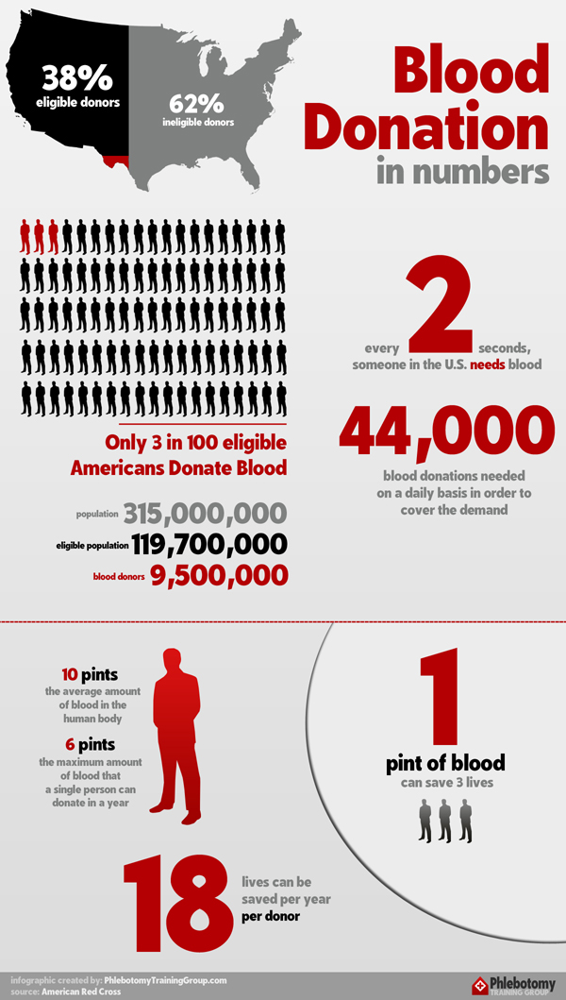
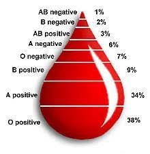

Donating Blood
Back when I first hit 18, I was immediately reminded eagerly by my dad that I would finally be eligible to volunteer as a blood donor. Being someone who religiously donated his own blood every 2-3 months from a youthful age of 18 (note that he is over 50 now and has barely missed a single donation), he attests that because of his habitual routine, he has managed to stay healthy enough to circumvent any common age-related health issues.
Through my observations of his health, his claims are not without substance, yet people are still doubtful, and rightfully so - research on individuals who donate blood regularly and consistently are very scarce due to the lack of such dilligent individuals. According to the American Red Cross, only an estimated of 3% of age-eligible people actually donate yearly in the US. If you are a blood donor yourself, think about it - how regularly do you actually donate?

Blood donation infographic based on stats from the American Red Cross.
At the time of writing this, I have just returned from my 14th blood donation with a sore left arm, which inspired me to start writing this blog post. Here is my research and summary on some of the reasons why I think you should also donate more regularly.
Reasons you should donate blood regularly
1. For a Good Societal Cause
Here’s a quick fact - every two seconds, someone in the U.S. requires a blood transfusion. Donated blood is used for helping people injured in accidents, undergoing cancer treatment or even battling blood diseases.
Just early this year (January, 2022), the American Red Cross has announced that it was facing its worst blood shortage in a decade - people are less inclined to leave their homes due to the coronavirus outbreak, leading to the loss of blood collections due to societal closures. Furthermore, people taking vaccine jabs may or may not be eligible for blood donations for a while. This alarming drop in donations, coupled with the yet again rising COVID cases mean that blood donors are needed now more than ever before.
Medicinal and technological advancements are always progressive and ever so evolving, leading to new discoveries on ways to treat complex diseases. But one thing remains constant - the reliance on the goodness of human beings to provide blood. The blood you give is a lifeline in an emergency (accidents) and also for people who need blood transfusion for long-term treatments. Because of the different blood types we all possess, rare blood types such as O negative are even more in need. This is due to the fact that O negative red blood cells can be used in emergencies when the person’s blood is unknown since anyone can receive red blood cells from O negative donors. It is estimated that only around 8% of people have O negative blood, but O negative makes up 13% of blood transfusion requests from hospitals.

Rarity of blood types in percentages.
Another cool fact is that people who have recovered from COVID-19 may be able to help others with fighting this disease by donating blood plasma instead, according to the FDA. This is due to the fact that blood plasma contains antibodies to fight the infection. So, if you’ve recovered from COVID-19 and are eligible for a blood donation, your blood is potentially more beneficial than you think!
2. Surprising Health Benefits!
The standard procedure for a blood donor is to undergo a mini health screen performed by a trained staff member. More specifically, your pulse, blood pressure, weight, haemoglobin levels (and since COVID-19, your body temperature) will be checked. Infectious diseases that you are unaware of will also be screened for. This is provides an excellent insight into your health, as you will be required to be fit enough to partake in the blood donation scheme. If an issue just arise with your vital signs, you will definitely be directed to a physician to be checked for more thoroughly.
Another more intrinsic health benefit from regular blood donations is that it helps to reduce cardiovascular risk factors. Basically, donating blood helps lower the viscosity of your blood, which has been associated with the formation of blood clots, heart attacks and strokes. According to a study, donating blood regularly lowers iron stores, which have been believed to increase the risk of a heart attack.
Partaking in this pursuit of kindness during a time of need does wonders for your mental health too - it feels good to help others, and it has been shown that altruism and volunteering have been linked to positive health outcomes, including a lower risk for depression and greater longevity.
3. A free cheat meal!
According to the University of California, San Diego, donating blood burns about 500 calories per pint. Your body will even lose a substantial amount of weight, and you can think of donating a pint of blood to be equivalent to an hour of exercise. Do not worry, these are all transient effects that have been shown to not affect your health in the long-run. The good news is, you can go out and indulge in a fat cheesecake, guilt free! In all seriousness though, it’s important to stay hydrated and eat well before and after your blood donation session.

How to get started
London
In London, I sign up to donate blood via NHS Blood and Transplant’s Give Blood website. It’s really easy to get started, and typing in your postcode will filter the blood donation centres closest to you! I’ve been donating at the blood donation centre at Westfield Shopping Centre, near White City. Do take the first step to sign up as a blood donor if you haven’t already!
Malaysia
On this website, there is a table showing the list of blood banks for each state in Malaysia. I suggest ringing them up to confirm whether or not they have any blood donation drives scheduled, but from my experience, the state hospitals are always open for blood donation. Some other places such as shopping malls may have blood donation drives set up, but this only happens occasionally, so do check with your local state hospital regarding blood donation drives near you. Donating in Malaysia is as easy as simply walking in and filling up a form, before being checked for your eligibility, so do give it a go!
Conclusion
Blood donors are a vital service to the community. You hold the power to make a difference in the lives of others, so why don’t you?